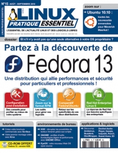
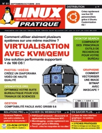

No, I haven't written a book, but I was pleased to see articles from me published in issue 61 of Linux Pratique and issue 15 of Linux Pratique Essentiel, two French magazines from Diamond Editions. In them you will find reports about Ubuntu Developer Summit Lucid and Akademy 2010 (yes, paper press is kind of slow :) ) as well as interviews of Jonathan Riddell (Kubuntu) and Ivanka Majic (head of Canonical design team).
  (click the covers for table of contents)